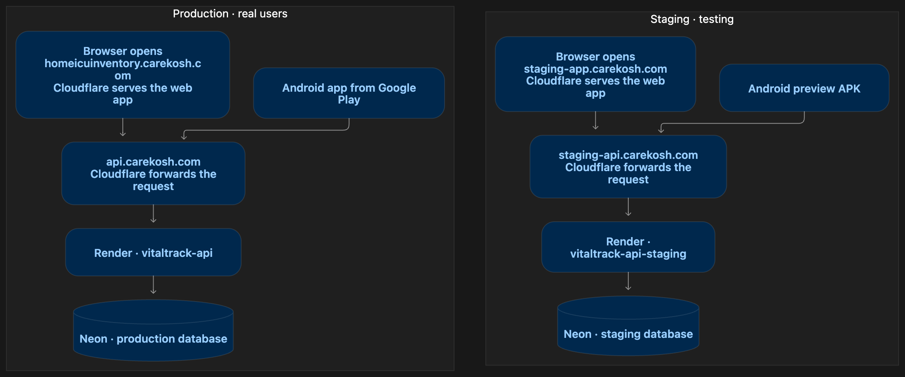
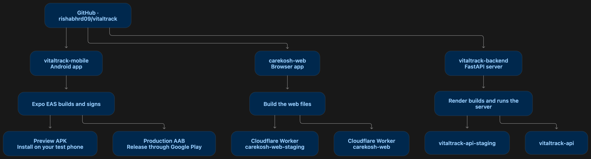

New developer reading order
Start with the product, then follow a single request. The links open the copies in this checkout. The stock example below follows source revision a14b623, reviewed 21 November 2026.
Learn the product and its vocabulary. Read Parts A and B of the Complete developer guide for accounts, inventory, orders and the repository layout. Use the local quick start to run a browser or phone against the local API and Part C when you reach the API. Editable Markdown.
Draw the boundary between client and server. Open System overview and API flows for the visual model of the Android client, API and database. Its October illustrations show an earlier release. The Atlas system map adds the browser and both hosted environments.
Look up the operation you are changing. Use API traceability to find a method, path, handler and relevant tests. Open the existing-item PUT entry for the stock example. Older walkthroughs include historical line numbers. Follow the handler by name in this checkout. Editable Markdown.
Work out where the change will run. Use this Atlas’s request diagrams for traffic and its developer release checklist for branch, staging acceptance, promotion and rollback evidence.
Open the guide for the component you own
| File | When to use it |
|---|---|
| Web README | Before running the browser app. Choose demo or API mode and check the API URL before testing persistence. |
| Backend README | Before changing a handler or database rule. Start a local PostgreSQL instance, migrate it and run the API tests. |
| Backend and FastAPI illustrated guide | When you need the reasoning behind dependency injection, ownership checks, transactions and optimistic concurrency. Start with its revision note. |
| Android README | When the same behavior must work on a phone. Trace the Expo screen, mutation hook, cached reads and staging build profile. |
| Hosted staging release acceptance | Before promoting a candidate. Record the deployed versions, then exercise the affected journey with a staging account. |
To check what triggers a build, read the backend and Android CI workflow, web checks and manual web release. To check a destination, open Wrangler configuration, the Render blueprint or Android build profiles. The deploy histories identify the versions actually serving users.
Find a guide by engineering task
For your first inventory fix, follow the reading order, run the stock edit walkthrough, then use the release checklist. For a specific task, open the group below. Each file opens from this checkout.
Verification record · 21 November 2026. Against source revision a14b623, a fresh local PostgreSQL 16 database migrated to 0013_supply_reviews. The full backend suite on the migrated schema passed 975 tests and skipped two. The Android Node suite passed 491 tests and the browser frontend unit suite passed 103. The API inventory matched all 68 registered operations, including 65 under /api/v1. All 90 steps in the local API walkthrough matched their expected results with email and AI provider calls simulated. Both Compose configurations parsed and the public site passed its local, staging and production artifact checks. Use these as local evidence. Record new dashboard, browser, device and restore results for a release candidate.
Set up a development machine
Quick start · Choose a browser demo or the local Android and API setup.
Illustrated developer onboarding · Walk through a first API request and the Android development loop. Use the revision note for current commands.
Docker for this repository · Understand containers, ports, volumes, migrations and the differences between the dev image and the Render image.
Local testing guide · Diagnose a failed container, local database connection or handset connection.
Local testing internals · Understand how the setup scripts, Metro, Docker networking and a physical phone fit together.
Visual local testing manual · Use the illustrated Android setup as a companion to the quick start.
USB and ADB reverse · Reach a laptop service from an Android phone over USB when LAN access is unavailable.
Understand a request and test a change
Illustrated architecture collection · Find the four volumes covering request flow, FastAPI internals, developer onboarding and deployment.
Diagram sources · Find the diagrams embedded in the technical guides and the instructions for maintaining them.
API testing with curl · Exercise local registration, bearer authentication, inventory, order transitions and error responses on disposable data.
Backend development and test commands · Choose a disposable PostgreSQL database, apply Alembic and run the same schema test modes as CI.
Documentation verification tools · Regenerate the API inventory and rendered guides, check local links, or run the synthetic walkthrough.
Browser and Android parity · Compare feature coverage when a shared API or inventory operation changes.
Web verification record · Find the scope of earlier browser checks and choose cases to repeat for your revision.
Public site · Use this for landing-site content or build changes. The signed-in inventory frontend lives in carekosh-web.
Public site verification · Check links, navigation and responsive behavior when the public landing site changes.
Configure environments and ship
Environment guide · Identify each frontend, API and database boundary before choosing configuration values.
Illustrated environments and deployment · Understand where an API request travels and how a build reaches an environment.
DevOps and architecture companion · Understand CI roles, database design and service boundaries. The dated diagrams record earlier releases.
Git workflow · Prepare a branch and pull request. Check the live repo rules before relying on a required job or approval.
Web deployment and rollback · Follow the stage, publish, verify and recover steps for the browser app.
Web security and capacity · Identify which checks can run locally and which require hosted traffic, configuration or measurements.
Hosted staging acceptance · Record Worker version, Render revision and the actual result of a staging user journey.
Expo and Play Store · Understand APK versus AAB, EAS build profiles, the internal track and promotion.
Android credentials · Locate the signing and Google Play credential instructions before building or submitting.
Launch readiness runbook · Use the release and rollback rehearsal steps. Record fresh results for the release candidate.
Uptime monitor template · Compare proposed liveness and readiness probes with your configured monitoring service.
Consult when a feature is affected
Backend hardening history · Read the rationale for migration, authentication, concurrency and retry changes. Compare each dated finding to its implementation.
Email verification · Trace a registration email and its verification link. Check the current hosted startup requirements before changing mail settings.
Hosted email startup guard · Understand why hosted email verification requires a configured mail transport.
Supply Review · Trace server-generated proposals and the explicit action that creates a pending order.
Voice inventory and order drafts · Understand the mobile voice path, its consent boundaries and the confirmation that saves an order.
Whistle listener · Check Android build and model requirements before changing offline speech recognition.
Personal OpenAI understanding · Check the consent and key handling for the optional interpretation provider.
Sarvam narration · Trace answer text to audio when this optional narrator is selected.
Optional voice service · Read before working on the standalone service. Check whether the selected client build uses it.
Read as design history or proposals
Original architecture diagrams · Study the earlier system and data model. The current web client and hosted ingress are mapped in this Atlas.
Original developer handbook · Find longer worked examples. Use the current component READMEs for setup and version-specific instructions.
Backend interview reference · Study FastAPI concepts. Check current auth, request limits and transaction semantics against the linked source.
Server-first architecture · Learn why the application moved inventory writes to the shared backend.
Original environment diagrams · Understand the origin of the environment split.
Original build and deploy flow · Read the history of Android and API publishing. For a release today use the component workflow.
Custom domain setup record · Understand how the API hostnames were first attached to Render. Both API records are proxied in the later DNS capture.
Domain and mail history · Trace the DNS and mail setup. Verify current records before changing the zone.
Earlier end-to-end verification · Reuse the test scenarios with current expected results and record the candidate SHA.
Deployment strategy history · Compare the earlier release strategy with the current manual web release.
Staging incident record · Use the incident timeline to diagnose a similar build filter or branch mismatch.
AWS migration proposal · Evaluate a possible future hosting design. The observed API deployment uses Render.
Full documentation index · Find additional specialist guides, audits, historical evidence, prompts and proposals.
Interview books and HTML tutorials
For a backend assignment, start with the illustrated system overview, then the illustrated FastAPI guide. Use the API inventory to find the handler and database behavior for the operation you will change.
Read the interview books in this order
The whole project · 34 chapters and 65 questions. Start with the system map. Rehearse one stock edit from the browser or phone to PostgreSQL. Explain what the second editor sees after the first saves.
The FastAPI backend · 68 chapters and 132 questions. Follow the request through middleware, the database session lifetime and order replay and stock application. Use the migration chain for schema changes.
Authentication and security · 37 chapters and 82 questions. Compare Android and browser login, trace token rotation, then explain which session a logout revokes and how shared quotas work.
What the chapter review verified
On 21 November 2026 the review used GitHub main at a14b623. All 139 chapters link to repository evidence. The registered application exposed 65 versioned API operations and three root operations. The ORM declared 18 application tables. Alembic’s head was 0013_supply_reviews. The backend pinned FastAPI 0.162.0 and PyJWT 2.15.1. Reviewed baseline · API inventory · Backend pins.
Local checks passed 975 backend tests on the Alembic-migrated schema (two skipped), 491 Android Node tests and 103 web tests. The API walkthrough matched all 90 expected outcomes against disposable PostgreSQL. The books opened offline at phone and desktop widths with working chapter navigation and question controls. Production configuration, physical-device behavior and capacity require separate evidence.
When a dependency, route or workflow changes, update the chapter fragments and question banks and the reviewed baseline. From the repository root run python3 interview/src/build.py, then python3 interview/src/check.py. The builder resolves excerpts from the pinned Git revision. Review the surrounding explanation when changing that revision. Book builder · Book checks.
Two separate references at the repository root cover the original design. Use the server-first interview guide for the decision to centralize writes, and the backend interview reference for its longer explanations and question bank.
Learn by doing
Illustrated onboarding and local testing field manual · Set up a development machine and follow an Android request to the local API.
Illustrated deployment guide · Connect builds, environments and migrations. Use the release checklist when shipping a revision.
Supply Review tutorial and architecture guide · Follow a proposed order through review and explicit confirmation.
Voice inventory and order drafts · Follow a voice request. The Whistle, OpenAI, Sarvam and Alba guides cover individual speech and interpretation options and their recorded availability.
For earlier reviews, see the voice review, production guard audit and staging incident. The proposal index lists future designs separately.
Trace one stock edit from screen to database
Suppose a staging account opens a box of gloves at quantity 10, version 3, changes the quantity to 8 and selects Save. Use a fictional item and the web app’s real API mode for this exercise.
- Item editorKeep the version from when the user opened the item.
- API requestSend the edited fields with version 3 to the environment’s API hostname.
- Database transactionCheck owner and version. Save quantity 8 and version 4 with its activity and audit records.
- RefetchRefresh the inventory. A second client on the same account and API can read quantity 8.
Follow the calls in your editor
Browser. ItemForm keeps the edit snapshot. Follow the save through the workspace action to saveItem and the browser HTTP client. An existing item uses
PUT /api/v1/items/{item_id}with the snapshot version. The Worker supplied the page assets. The browser sends this second request to the API hostname.Android. Start at
handleSavein the item screen. FollowuseUpdateItemin the mutation hooks throughitemService.updatein the item service and the mobile HTTP client. It sends the same PUT. The separate stock-only operation,PATCH /api/v1/items/{item_id}/stock, has its own handler and payload.Render API. Follow the application entry point, authenticated user and session dependencies and item schema into
update_itemin the item handlers. The handler locks the owner’s supply revision, checks ownership, and issues a database update conditional on the item ID, owner and submitted version.PostgreSQL and the next read. On success the transaction increments the item version, records
ITEM_UPDATEand an audit entry, advances the owner’s supply revision and commits. The API returns the refreshed item with HTTP 200. The web action refreshes workspace data and the Android mutation invalidates item and activity queries. A different device sees the change on its next fetch.
Prove the edit and the conflict
In staging, open the same test item in two browser tabs before editing. Save 8 in the first tab. In the Network panel check the API hostname, PUT, submitted version and the 200 response with the incremented version. Reload the page and refresh Android on the same staging account. Both should show 8. Then save a different quantity from the still-stale second editor. If the tab has already fetched version 4, Save is disabled before it sends anything. If the change is still unseen, submitting version 3 returns HTTP 409. Load the latest item, confirm it still shows 8 and review the edit before trying again.
Reproduced locally on 21 November 2026. Two Chromium tabs used the API-mode web app, FastAPI and a disposable PostgreSQL 16 database migrated to head. The first save returned 200 with version 4. The second returned 409. Reopening the editor showed 8, and a fresh API read returned 8 at version 4.
For repeatable local checks, use the browser editor scenarios with a mocked API, API tests against a disposable database and Android mutation reconciliation tests. Record hosted and physical-device results separately for each release candidate.
The system at a glance
Start with two questions. Is someone using the app, or releasing a new version? A sign-in follows an API request. A release moves code from GitHub to a hosting service.
| What you are connecting | Production | Staging |
|---|---|---|
| Browser address → Worker | homeicuinventory.carekosh.com → carekosh-web |
staging-app.carekosh.com → carekosh-web-staging |
| Public API → Render service | api.carekosh.com → vitaltrack-api |
staging-api.carekosh.com → vitaltrack-api-staging
|
| Render → PostgreSQL database |
DATABASE_URL selects neondb in the documented layout.
|
DATABASE_URL selects vitaltrack_staging in the
documented layout. Verify actual identities privately.
|
| Android → API | EAS production → store bundle (AAB) → production API. |
EAS preview → internal installer (APK) → staging API. |
| Git source |
main at a14b623. Render screenshot identifies this
exact commit.
|
Staging Git tip a14b623. Render’s staging header showed the same
linked feature branch with 52d0618 Live.
|
Follow a user request
Imagine someone opens their inventory and changes the quantity of an item. Loading the screen and saving the change take different paths.


- BrowserRequests /login at the app hostname.
- Cloudflare custom domainSelects the matching environment’s Worker.
- Worker Static AssetsServes HTML, then the named JS and CSS assets.
- React in the browserRenders the screen and uses the API URL embedded at build time.
- Browser or AndroidSends an authenticated HTTPS request to the environment’s API.
- Cloudflare API hostnameProxies the request and applies that host’s request-header rule.
- Render · FastAPIChecks ingress, user authorization and input. The service executes inventory logic.
- Neon · PostgreSQLPersists records through SQLAlchemy. The API returns the result to the client.
- Page opensPOST /api/v1/web-auth/refresh checks for a session.
- Fresh browser401 “No browser session” is the expected signed-out result.
- Successful login/web-auth/login returns a short-lived access token and sets a secure HttpOnly refresh cookie.
- Later requestsAccess token stays in memory. The browser sends the scoped cookie to refresh the session.
What if two devices change the same quantity?
Both item editors send the quantity and the version they opened via PUT /api/v1/items/{item_id}. Follow the stock edit walkthrough.
The API checks that the item belongs to the signed-in user. PostgreSQL updates the row
only if the version still matches. A successful transaction advances the version and
records the activity. A stale edit receives HTTP 409 so the client can reload the
current stock before retrying.
Stock update implementation ↗
The frontend and API are different origins. The browser preflights the credentialed
request when required. The API allows the exact web origin, credentials and the app’s
X-CareKosh-Web header. Cloudflare adds a separate private
origin-verification header on its onward request. Android uses the mobile auth routes
and Expo SecureStore for its tokens.
Server structure follows FastAPI routes → services and validation → async SQLAlchemy sessions → PostgreSQL. Categories, items, orders, supply reviews, activity and account records live behind the API. Brevo handles transactional mail. Redis is configured for rate-limit state shared across server processes. Optional AI, narration and device voice features have their own flags, consent and credentials. The standard inventory path can be understood independently of those features.
Which branch is staging?
GitHub’s branch list and comparison were checked on 20 November 2026. A branch selects source, a build profile selects configuration, and a deployment selects the version receiving traffic.
| Question | Answer |
|---|---|
| What is actually checked out on this Mac? |
feature/backend-hardening-ai-voice-agent-foundation at
a14b623 after the fast-forward. Production was released from GitHub
main at a14b623. A local checkout can differ from the
deployed source.
|
| Is there a branch named staging? |
No literal staging branch appeared in the checked branch list. The
staging web deployment shows the long-lived feature branch above. The latest
Render screenshot confirms this branch on
vitaltrack-api-staging and identifies 52d0618 as Live.
|
| Do the Git branches match? |
Yes. Both remote tips are a14b623, zero commits ahead or behind.
The fast-forward brought five commits into staging. Compared with Render’s live
52d0618, they changed exactly
.github/workflows/carekosh-web.yml,
.github/workflows/ci.yml,
.github/workflows/release-carekosh-web.yml,
carekosh-web/README.md and
docs/deployment/CAREKOSH_AWS_DEPLOYMENT_PLAN.md.
|
| Are the apps aligned? | Both tips contain identical source, release automation and tracked configuration. Other feature and fix branches may have independent histories. The two Render revisions contain identical backend application code. Output bundles intentionally differ by environment. Database rows, live secrets, deployed revisions, dashboard triggers and Play distribution have separate lifecycles. |
| Why does staging say Production in Cloudflare? |
It is the primary deployed environment of the Worker named
carekosh-web-staging. Its custom hostname, Wrangler target, build
directory and API URL select CareKosh staging.
|
| How should a future change travel? | Start work on a short-lived branch from main. After review and CI, stage the resulting main commit and verify the changed user journey before releasing it. Follow the developer release checklist. |
Recheck the live GitHub comparison ↗ · Production revision ↗
Take a change from assignment to production
For each change, use the pull request as the release record. Name the user behavior you expect, the components that can affect it, the commit you tested and what you observed after release.
Check production triggers before using this sequence
In Cloudflare → carekosh-web → Settings → Builds, verify the native Git deploy
command is npx wrangler deploy --env production --dry-run. In Render →
vitaltrack-api → Settings, verify native Auto-Deploy is off. Also keep GitHub’s
optional Render hook disabled while using manual releases. If a merge can still publish
automatically, resolve the trigger configuration before merging the candidate.
At the November check, GitHub required a pull request for main. Its effective rules listed no required CI status checks. Inspect the actual check results on every PR. To enforce them, configure required backend, mobile and web checks that reliably report for the changes they cover. GitHub’s branch workflow ↗
mainWork through one release
-
Scope and reproduce. Start from a freshly fetched
origin/main. For a stock bug, createfix/stock-count-refresh, record the steps that reproduce it and the expected quantity after reload. Keep the long-lived staging branch linked to its hosting services. - Implement and review. Make the smallest complete fix, add a regression test for the failure and run the relevant checks locally. Open the PR against main. Review the diff and confirm the applicable web, backend and mobile jobs passed. Record a reason for each platform outside the change.
-
Stage the merged revision. Record the full merged SHA from GitHub. Fast-forward
feature/backend-hardening-ai-voice-agent-foundationto that exact SHA. If the histories diverge, reconcile the differences in review. Check the active staging deployment for each changed component and run the tests below with a staging account. - Promote the tested change. If a staging test fails, capture the failure, fix it on a change branch and repeat the PR and staging steps. On success, release only the affected components. For a shared API change, deploy a backward-compatible backend before clients that depend on it.
- Verify and close. Compare the active version with the release record, exercise the changed journey using a controlled production account, and inspect errors. Record the outcome and previous working version. If verification fails, pause further rollout and use the recovery guide.
Which platforms does this change touch?
Use every applicable row. A backend change can affect an already-installed Android app even when you ship no new mobile build.
| Change | Prove it on staging | Release and verify in production |
|---|---|---|
| Web frontend | Open the staging Worker domain in a fresh browser. Confirm it calls the staging API. Sign in, change a test item’s quantity and reload. Check the expected result and the specific regression. | Run Release CareKosh web from the verified main revision. Record the Actions run and Worker version. Confirm the public bundle verification passed, then repeat the affected journey at the production web domain. |
| Backend or shared API |
Confirm the candidate is Live on vitaltrack-api-staging. Check
/health for staging and database connectivity. Test both the
expected result and a relevant failure. For a shared stock change, edit in the
browser and reopen the same inventory on Android.
|
Deploy the tested SHA on vitaltrack-api. Check Live SHA, production
health and service logs. Exercise the change with supported clients, including
the previously released app when the API contract changes.
|
| Android client | Install an EAS preview APK built from the candidate on a device. Confirm it uses the staging API. Test the fix, close and reopen the app, and verify that saved state survives. Record the EAS build ID. | Build the signed production AAB from the tested source. Verify its version code and production API on Play internal testing. Promote the tested version to the intended track and verify the delivered version and affected behavior. |
| Database schema or data migration | Verify the target Neon database, schema revision and recovery scope. Apply the migration through the staging API deployment. Test existing records, new writes and compatibility with clients still in use. | Confirm the production recovery point and target before deployment. Record the migration revision, verify reads and writes, and check the API after startup. An image rollback alone cannot undo a data migration. |
| Workflow, routing or documentation | For CI, exercise the relevant check or dry run. For routing, use the staging custom domain and verify the actual API request. For documentation alone, check the instructions, links and rendered result. | For delivery changes, record the workflow run or provider configuration and verify the intended trigger. For a documentation-only release, record the reviewed revision and the reason runtime releases were unnecessary. |
Release record to paste into the pull request
Change / PR: Expected behavior and reproduction: Affected components (or N/A with reason): Local tests and CI run: Merged SHA / staging branch SHA: Staging Worker, Render or EAS version: Staging account or test fixture · steps · result: Production SHA / Worker version / Render deploy / Play version and track: Production health, smoke test and logs · time · result: Previous working version / recovery action: Decision: release, hold or roll back
Read the DNS records page
Screenshot 1 shows the carekosh.com zone on the Free plan. Each row publishes an address, a hosting association or mail information. The 16 / 200 counter is the zone’s record usage in this snapshot.
| Column or control | How to read it |
|---|---|
| Name · Type · Content | Name is the hostname someone looks up. Type defines what its value means. Content is the alias destination, Worker, mail server or published text. |
| Proxy status | Orange Proxied sends HTTP traffic through this Cloudflare zone. Gray DNS only publishes an answer. Mail-related lookups use ordinary DNS. A proxied CNAME may return Cloudflare IP addresses in a public lookup. |
| TTL | Time to live is how long a resolver may cache an answer. Auto delegates the interval to Cloudflare. A 1 hr record can stay cached for an hour. |
| Tags · Comment · Details | Optional operator metadata, notes and type-specific details. The numbers on MX rows give preference: the lowest number is preferred. |
| Lock · Edit · View | A lock marks a managed record in this view. Manage Worker domains or Email Routing in the owning product. Edit changes an editable record. View opens its details. |
| Page controls | Search and filters narrow the table. Display options and sort arrows change the view. Checkboxes select rows. Import, Export and Add record operate on DNS configuration. |
All 16 records in the screenshot
Names below are relative to carekosh.com unless written in full. The apex means carekosh.com itself. Mail records support the domain across environments.
| Name | Type → content | Meaning for CareKosh |
|---|---|---|
| als | CNAME → als-carekosh.pages.dev | Proxied. Separate ALS site. |
| api | CNAME → vitaltrack-api.onrender.com | Proxied. Production backend for web and Android. |
| brevo1._domainkey | CNAME → b1.carekosh-com.dkim.brevo.com | DNS only, 1 hr. Brevo’s first DKIM selector lets recipients verify signed outgoing mail. |
| brevo2._domainkey | CNAME → b2.carekosh-com.dkim.brevo.com | DNS only, 1 hr. Second Brevo DKIM selector supports signing-key rotation. |
| staging-api | CNAME → vitaltrack-api-staging.onrender.com | Proxied. Staging backend for browser and preview APK. |
| Apex | MX → route3.mx.cloudflare.net · 70 | Inbound Cloudflare Email Routing, third preference here. |
| Apex | MX → route2.mx.cloudflare.net · 19 | Inbound mail, first preference. |
| Apex | MX → route1.mx.cloudflare.net · 42 | Inbound mail, second preference. |
| Apex | TXT → SPF policy | The include references _spf.mx.cloudflare.net. The ~all ending signals a soft fail for other senders. Supports mail forwarding. |
| Apex | TXT → Brevo verification code | Proves domain control to Brevo. This public marker serves a different purpose from the private sending API key. |
| cf2024-1._domainkey | TXT → DKIM public key | Lets mail recipients validate signatures using this selector. The screenshot abbreviates the value. |
| _dmarc | TXT → DMARC policy | p=none requests monitoring. rua identifies where aggregate reports go. Applies to mail claiming the domain. |
| Apex | Worker → carekosh | Proxied. Public brand/landing site hostname. |
| homeicuinventory | Worker → carekosh-web | Proxied. Production inventory frontend. |
| staging-app | Worker → carekosh-web-staging | Proxied. Staging inventory frontend. |
| www | Worker → carekosh | Proxied. Another hostname for the public site. |
Why there are two header rules
Screenshot 2 shows one active rule per API hostname. A request header carries metadata alongside an HTTP request. A transform lets Cloudflare set that metadata before forwarding the request to Render.
- MatchHostname equals api.carekosh.com.
- Set staticCloudflare writes X-CareKosh-Origin-Verify on the onward request.
- VerifyRender compares the received value with that service’s ORIGIN_VERIFY_SECRET.
- ContinueThe API then performs its own user and application checks.
| Dashboard rule | Match and scope |
|---|---|
| 1 · Verify CareKosh staging API origin |
Only staging-api.carekosh.com. Use the staging service’s private
value.
|
| 2 · CareKosh production API origin verification |
Only api.carekosh.com. Use the production service’s private value.
Header names are case-insensitive.
|
Order is the evaluation sequence. The two exact hostnames are mutually exclusive. Name is a human label, Match against selects traffic, Action sets the header, Active means enabled, and the menu manages the rule. Both API DNS records are now orange-clouded in screenshot 1. Keep the value in Cloudflare and the matching Render environment. Redact the Action column before sharing screenshots.
The empty groups above mean no rules of those types are listed there. A redirect tells the browser to visit another URL. A rewrite changes the path Cloudflare processes internally. A configuration rule adjusts edge settings on matching traffic. An origin rule changes how Cloudflare reaches the upstream service. Bulk Redirects and Managed Transforms open separate features.
Read Workers & Pages like an inventory
Screenshot 3 lists account-wide applications. The two inventory frontends are Workers with static assets. Pages is a separate Cloudflare hosting product that appears in the same list.
| Application | What the screenshot identifies | Relationship |
|---|---|---|
| carekosh-web | Worker · homeicuinventory.carekosh.com · rishabhrd09/vitaltrack | Production inventory UI. |
| carekosh-web-staging | Worker · staging-app.carekosh.com · same repo | Staging inventory UI. |
| carekosh | Worker · apex and www in DNS · further routes summarized in the list |
Public brand site. carekosh-site/ contains landing-site source.
Verify the Worker’s own deploy history for its exact live revision.
|
| als-carekosh | Pages · als-carekosh.pages.dev · rishabhrd09/als-compass | Separate ALS project using als.carekosh.com. |
| gazespell | Pages · gazespell.pages.dev · no Git connection shown | Separate application. Its deployment method is outside this guide’s evidence. |
| gazespell-privacy | Worker · gazespell.com/privacy* and another route | Separate privacy route for Gazespell. |
The GitHub badge identifies the connected source repository. The route under a name is where traffic enters. “+ other routes” is a collapsed list. Commit text or a blank summary describes a build event. Relative times show age. Requests are traffic counts and CPU time measures Worker compute. A dash or unavailable metric is insufficient evidence of zero visits. Search, Show all and Last modified filter/sort the account list. Create application provisions another resource.
Inside the two Worker dashboards · screenshots 4 and 5
| Field | Meaning here |
|---|---|
| Overview diagram | Domains 1 is the mapped site. Workers 0 and Queues 0 are incoming relationships on this diagram. Bindings 0 means no configured service/resource connections appear. A browser HTTPS call to Render does not require a binding. |
| Observability and Metrics | Worker Logs and Worker Traces show Disabled for both. The dashboard reports unavailable metrics for these static-assets-only Workers in the last 24 hours. Render request logs and browser network responses are separate evidence. |
| Tabs | Overview summarizes wiring, Metrics charts usage, Deployments shows releases, Observability exposes logs/traces, Issues lists reported problems, Domains manages hostnames, Access controls access policies, and Settings holds builds and configuration. |
| Version, source, status and actor | A Worker version ID identifies a Cloudflare artifact. Git SHA identifies source. Build denotes Git-connected build, Wrangler denotes CLI publication, Dashboard denotes manual dashboard action. “by API token” identifies the credential type. Ready, Failed or Skipped refers to that row; duration and time give context. |
| Production history |
9a2e24ce is the Wrangler release. The skipped main build and the
successful dry-run build without a version illustrate why a green build alone
cannot prove publication. bbc195c9 and fee288e2 are
earlier dashboard versions.
|
| Staging history |
ccc3edba is the Ready build-staging deploy-hook version from the
feature branch shown. An older main build failed in 10 seconds.
044114ab and 7eab7ee2 are earlier dashboard versions.
Look at the active deployment before interpreting an older failed event.
|
What triggers a release
GitHub Actions, Cloudflare Workers Builds and Render can all watch the same repository. Each integration has its own trigger, credentials and target.

main. Open full-size release diagram.
- Merge or pushRelevant web changes trigger checks. The intended Cloudflare Git build ends with --dry-run.
- Operator releasesGitHub → Actions → Release CareKosh web → Run workflow → main.
- Verify and publishReusable checks build both environments. The publish job downloads the verified production assets and runs Wrangler.
- Confirm deliveryThe job compares the public JavaScript bytes with the retained artifact. Check a real user flow separately.
| Trigger | Exact effect or control |
|---|---|
| Web PR / push |
.github/workflows/carekosh-web.yml uses path filters for
carekosh-web, carekosh-site and its own workflow file. Runs npm ci, audit at
high threshold, types, lint, Vitest, build guards, Playwright Chromium, both
verified builds, public-site checks, hosting checks and a production Wrangler
dry run. Also callable manually or by another workflow.
|
| Manual web release |
.github/workflows/release-carekosh-web.yml uses workflow_dispatch.
Verification requires refs/heads/main. The publish job depends on it and uses
the main-restricted GitHub environment carekosh-web-production. It
retrieves dist-production from the same run and publishes the
static Worker with wrangler deploy --env production. Release
concurrency serializes production jobs.
|
| Production Worker Git connection |
Worker Settings → Builds selects repo, branch main, root
/carekosh-web/, build npm run build. Native deploy
command prescribed in main README:
npx wrangler deploy --env production --dry-run. The earlier
screenshot showed a temporary commit condition. The later overview confirms a
manual release but does not reveal the currently saved command. Inspect this
field to prove future pushes only validate.
|
| Build settings on screen |
Disable builds controls native Git builds. Watch paths select triggering changes
(* shown). Build variables/secrets are available to the build
process. API token authorizes build/deploy operations. Deploy hooks trigger
builds for a configured target. Build cache speeds later jobs. A selected build
token and a connected repo perform different jobs.
|
| Staging Worker |
A build-staging hook produced the active version shown. The staging
build is npm run build:staging;
wrangler deploy --env staging publishes dist-staging to its custom
domain. These commands and target are in code. Verify the saved native branch,
trigger, watch paths and commands under the staging Worker’s Builds settings
before predicting what every push will do.
|
| General CI |
.github/workflows/ci.yml runs on PRs targeting main (including
labeled events), pushes to main, or manual dispatch. Backend tests use
disposable PostgreSQL, including migrated schema. The job called Frontend Tests
covers mobile TypeScript, native-module autolinking, tests and lint. Advisory
type/security checks and a non-blocking Expo Doctor step have different
enforcement from passing required checks.
|
| Production Render |
Screenshot shows a manual Dashboard deploy of a14b623 from
main. For a deliberate backend release use vitaltrack-api → Manual
Deploy, select the reviewed revision, then check Events and API readiness.
GitHub’s optional deploy-hook job requires a main push plus
ENABLE_RENDER_AUTO_DEPLOY=true; that repo variable was absent.
Render’s own Auto-Deploy switch is independent. Its off state was
owner-reported; recheck Settings after any integration change.
|
| Staging Render |
The staging service has its own repository/branch and Environment settings. The
supplied staging Deploys header shows the feature branch and
52d0618 Live. The two visible deployment triggers say “Environment
updated”. Check Settings for the current auto-deploy policy. A Cloudflare hook
for the web cannot publish this backend.
|
| Revision labels | [skip ci] and [skip render] are commit-message markers; the screenshots show a skipped build and a later deliberate manual Render deployment. The label, a Git merge and a successful build each convey less than an active deployment ID and a passing public check. |
Production release run ↗ · Web CI on main ↗ · Render deploy documentation ↗ · GitHub manual dispatch ↗
Render, Neon and the data boundary
Render runs the application process. Neon runs PostgreSQL. The private database URL on each Render service determines where a quantity change is stored.
- Git revisionRender checks out the linked repository at the selected SHA.
- Dockervitaltrack-backend/Dockerfile builds the API image.
- EntrypointWaits for PostgreSQL, runs alembic upgrade head and stops startup if it fails.
- API processGunicorn runs Uvicorn workers on PORT. /live checks the process; /health checks database readiness.
The production Blueprint declares Docker, root vitaltrack-backend, branch
main, Starter plan, Singapore and health path /live. A
Blueprint is the repository’s desired configuration. The Render screenshot independently
confirms Docker, Starter, the service, API domain, commit and manual deploy. The
displayed internal address is for Render private networking. Public clients use the
custom HTTPS API address.
The repository records one Neon project with a Neon branch called
production holding two databases, neondb and
vitaltrack_staging. A Git branch chooses source code; a Neon branch is a
database timeline. Two database names isolate rows, while a branch-level restore can
rewind both. Verify the actual project, endpoint, branch, database, role and restore
window in Neon before a schema change or recovery. No private dashboard proof of those
identities was supplied.
The app uses async SQLAlchemy with asyncpg and TLS in hosted environments. Its
documented configuration uses a direct Neon endpoint with application connection pooling
and a statement timeout. Schema revisions live in Alembic; the source head here is
0013_supply_reviews. A healthy response proves connectivity; it does not
identify the database or its Alembic revision.
Android has a separate release path
The Android client has its own executable, API address and distribution history. Updating the website takes effect on the next web load. Shipping a new Android binary takes an EAS build and a distribution step.
- Select source + profileEAS uses the source supplied to the build and the chosen eas.json profile.
- Produce a signed buildPreview generates an APK. Production generates an Android App Bundle with a remotely managed version code.
- DistributeTesters install the preview. A production AAB goes to a selected Google Play track.
- Run on deviceThe app calls its embedded API and keeps tokens in SecureStore. Both clients share data when using the same environment and account.
| Profile or release | Target and evidence |
|---|---|
| development | Development client and debug APK targeting localhost:8000. Local device connectivity requires the development setup. |
| preview |
Internal APK, preview channel, staging API, preview whistle flag. EAS finished
build d3faf48a on Nov 19 at source 52d0618. This
source’s mobile tree matches audited main. Install and test on device to verify
inventory sync.
|
| preview-voice-diagnostics | Extends preview and enables the explicit diagnostics flag. The production mobile configuration guards its API and experimental flags. |
| production |
Production API, production channel, auto-incremented AAB. Latest completed
production build seen was d26c5d83, June 30, code 7 from
835fad3. A current public rollout was unverified; the India public
listing returned 404 in the earlier check.
|
| Trigger and submission | The GitHub build-preview job requires a PR carrying the build-apk label and passing prerequisites. It queues EAS with --no-wait. Check EAS for final success. The production AAB job has if: false. A deliberate EAS production build and a separate Play submission are possible. The checked-in production submit profile selects Play internal testing. Promoting in Play Console is a separate release decision. |
Staging APK record ↗ · Production AAB record ↗ · Expo build setup ↗
Where every deployment credential belongs
There are four different permissions at work: read source, publish code, trust the edge, and authenticate a user. Each has its own owner and lifetime.
| Where to look | Name or setting | Who uses it and why |
|---|---|---|
| GitHub → Settings → Environments → carekosh-web-production | Variable CLOUDFLARE_ACCOUNT_ID |
Verified name. Selects the Cloudflare account. It is an identifier. |
| Same GitHub environment | Secret CLOUDFLARE_API_TOKEN |
Verified name. Wrangler uses it only in the publish job. Environment deployment
branch policy lists main; no required reviewer rule appeared.
Manual dispatch is the human release action.
|
| Cloudflare → Account API tokens | GitHub CareKosh frontend release | This credential authorizes publication. Open its token details to see which Workers operations, accounts and zones it can change, its expiry and any IP restrictions. “By API token” in the deployment history does not identify those grants or establish that each Worker has a uniquely scoped token. |
| Cloudflare → Worker → Settings → Builds | Git connection and build API token | The GitHub integration clones the repo. A build token authorizes Wrangler inside Cloudflare’s build job. Check each Worker’s Builds settings for the selected token. Staging history includes an API-token build. A GitHub Actions release uses the GitHub environment secret above. |
| GitHub → Settings → Secrets and variables → Actions | Repo secrets EXPO_TOKEN, RENDER_DEPLOY_HOOK |
Verified names. The first authenticates CI to Expo. The second is a private
Render trigger URL; possession of it is sensitive. Repo variables list was
empty, including ENABLE_RENDER_AUTO_DEPLOY. GitHub’s built-in
workflow token is issued per job.
|
| GitHub → Environments | production; VitalTrack Production / production |
Both exist. No environment secrets or variables were listed for either. The
backend hook job references production; the manual frontend release
references carekosh-web-production.
|
| Cloudflare → carekosh.com → Rules + Render → service → Environment | X-CareKosh-Origin-Verify ↔ ORIGIN_VERIFY_SECRET |
Two hostname-specific private pairs, one per environment. Cloudflare sets the header; Render validates it. Coordinate both sides during rotation, verify staging first, and keep values out of tickets, screenshots and frontend bundles. |
| Render → each web service | INGRESS_MODE, ALLOWED_HOSTS |
Blueprint uses edge_secret. Allowed hostnames and origin verification constrain requests accepted at the API boundary. |
| Render → each web service |
DATABASE_URL, SECRET_KEY, ENVIRONMENT
|
Select the database and credentials, sign and validate user sessions, and select hosted environment behavior. Use environment-specific database credentials and signing material. |
| Render → each web service |
WEB_AUTH_ENABLED, WEB_APP_ORIGINS,
CORS_ORIGINS
|
Enable browser auth and permit the exact frontend origin for that environment. Production blueprint sets true and the production web origin for both lists. The browser origin includes HTTPS. |
| Render → each web service |
REQUIRE_EMAIL_VERIFICATION, MAIL_PASSWORD,
MAIL_FROM, FRONTEND_URL
|
Enable verification, provide Brevo’s private sending credential and sender, and build account-email links. Production FRONTEND_URL points to the API’s /api/v1/auth pages. It serves a different purpose from the Worker hostname. |
| Render → each web service |
RATE_LIMIT_STORAGE_URI, RATE_LIMIT_KEY_PREFIX,
MAX_INFLIGHT_REQUESTS, API_BODY_TIMEOUT_SECONDS
|
Shared Redis counter location and namespace, plus concurrency and request body timing limits. Production blueprint declares prefix carekosh, 32 concurrent requests and 60 seconds. Live Redis provider and configuration need private confirmation. |
| Render → optional integrations |
SENTRY_DSN, GROQ_API_KEY, SARVAM_API_KEY,
AI_CREDENTIAL_ENCRYPTION_KEY and feature flags
|
Error reporting, optional AI services and encryption for supported personal credentials. Code support alone gives no evidence a paid integration is enabled. See config.py for granular consent, budgets, providers and feature switches. |
| Repository → carekosh-web/.env.production and .env.staging |
VITE_APP_ENV, VITE_DATA_MODE,
VITE_API_BASE_URL, VITE_APP_ORIGIN
|
Public inputs compiled into browser assets. Hosted data mode is api; the API base ends in /api/v1. Each web origin matches its own Worker. Public Vite inputs are visible to users. |
| Repository → vitaltrack-mobile/eas.json |
EXPO_PUBLIC_API_URL, EXPO_PUBLIC_WHISTLE_LISTENING,
EXPO_PUBLIC_VOICE_DIAGNOSTICS
|
Public embedded inputs. Base URL is the API host. Preview opts into whistle; diagnostic preview additionally enables voice diagnostics. Production omits these experiments. |
| EAS credentials / Play Console | Android signing material and Google service-account credential | Signing identifies the release publisher. Play submission uses the service-account path declared in eas.json. Store private material outside tracked source. Track, rollout percentage and reviewer decisions belong to Play Console. |
| Neon → project → branch → databases / roles | Database, role, endpoint, password and recovery policy | Neon issues the connection details; the Render service consumes them. Inspect role, database and recovery scope there. A Worker deploy token cannot establish database identity. |
Source of truth varies by field. GitHub names above came from a live metadata query.
Exact Cloudflare token grants require the private token detail view. Render Blueprint
declarations describe intended settings; sync: false means the operator
supplies the value separately. No Render or Neon private environment values were
exported.
Find the file that owns a change
These links point to the audited revision shared by GitHub main and the staging branch after the sync.
- Release trigger and permissions
-
.github/workflows/release-carekosh-web.ymlManual dispatch, main guard, environment, artifact download, Wrangler publish and live bundle check. - Web continuous integration
-
.github/workflows/carekosh-web.ymlPaths, reusable checks, test artifacts and dry run. - Backend and Android pipeline
-
.github/workflows/ci.ymlDatabase tests, mobile checks, Render gate, preview label and disabled production AAB job. - Worker names and domains
-
carekosh-web/wrangler.jsoncWrangler environment → asset directory → Worker name → custom domain. workers.dev and preview URLs are disabled. - Web build commands
-
carekosh-web/package.jsonSeparate production, staging and demo commands. - Production web address book
-
carekosh-web/.env.productionProduction API, app origin and data mode. - Staging web address book
-
carekosh-web/.env.stagingStaging API, app origin and data mode. - Asset generation
-
carekosh-web/vite.config.tsBuild output, host guards and generated hosting files. - Browser routing
-
carekosh-web/routes.jsonSPA routes served through the app entry. Unknown assets can still return 404. - Artifact verification
-
carekosh-web/scripts/verify-build.mjsAPI isolation, sample-data exclusion, routes, headers and source maps. - Web auth and HTTP client
-
carekosh-web/src/services/api.tsCredentials, refresh handling and HTTP error messages. - Public site
-
carekosh-site/README.mdSeparate landing page, links into the app and its own build. - Render Blueprint
-
vitaltrack-backend/render.yamlProduction service, platform settings and environment-key declarations. - Server image
-
vitaltrack-backend/DockerfileDependencies, runtime and server command. - Startup and migrations
-
vitaltrack-backend/docker-entrypoint.shDatabase readiness, Alembic upgrade and server startup. - API assembly
-
vitaltrack-backend/app/main.pyMiddleware, CORS, route registration and health endpoints. - Environment schema
-
vitaltrack-backend/app/core/config.pyNames, defaults, validation and feature flags. - Origin validation
-
vitaltrack-backend/app/services/ingress.pyValidates the trusted edge on API requests. - Browser auth
-
vitaltrack-backend/app/api/v1/web_auth.pyBrowser-only refresh cookie, origins and session checks. - Mobile and account auth
-
vitaltrack-backend/app/api/v1/auth.pyToken-based auth and account operations. - Persistence
-
vitaltrack-backend/app/core/database.pyTLS, engine, pool and async sessions. ORM entities live in app/models; versioned schema changes live in alembic/versions. - Email delivery
-
vitaltrack-backend/app/utils/email.pyTransactional mail integration. - Android build matrix
-
vitaltrack-mobile/eas.jsonProfiles, API URLs, build types, channels and Play track. - Android configuration guard
-
vitaltrack-mobile/app.config.jsChecks profile, cleartext and experimental flags; app.json holds the package identity com.carekosh.mobile. - Android request layer
-
vitaltrack-mobile/services/api.tsToken persistence, refresh and API requests. - Cross-client acceptance
-
carekosh-web/docs/STAGING_RELEASE_CHECKLIST.mdReal-browser/device tests and evidence to record before promotion.
Release confidence and recovery
Production web access is demonstrated. Full launch readiness also requires repeatable releases, recovery evidence and current mobile distribution.
| Evidence level | Current position · 20 November 2026 |
|---|---|
| Observed in production | Owner signed in successfully. Independent check found /login HTTP 200, bundle index-ONgk_NsY.js, database readiness healthy and a signed-out session response of 401. Real-account session persistence, inventory writes and email delivery are separate acceptance tests. |
| Observed in staging | /login returned 200 with index-EyW1YAxz.js. Initial API checks timed out at 40 seconds. A later /health returned healthy with the database connected and the anonymous session returned the expected 401. The delay alone cannot identify the cause. Record browser and device acceptance against a named candidate. |
| Delivery controls in place | Environment-specific builds, domain-scoped verification, CI against disposable PostgreSQL, manual web publication, main-only environment policy and byte comparison against the public bundle. Production and staging share application source at these tips. |
| Open before declaring operational readiness | Verify native Cloudflare build commands and Render auto-deploy settings, both database identities, schema heads and restore scope. Exercise inventory sync, session expiry and email using controlled accounts. Confirm alert delivery, backup restoration and a rollback rehearsal. |
| Mobile release gap | Record a device pass for the staging APK and a current production AAB. Verify Play track, version code and rollout in Play Console. The internal submission profile and an EAS success each prove only their own step. |
For the promotion sequence and component-specific tests, follow the developer release checklist.
If something breaks
| Symptom | Check first |
|---|---|
| Browser reports NXDOMAIN | DNS → look up the exact app hostname and Worker custom domain. Compare public resolution with the affected device; negative records can be cached. |
| Page loads, login says “Could not reach” | Inspect the browser Network request. Confirm API route, OPTIONS, exact allowed frontend origin, credentialed CORS and deployed backend revision. The generic message alone cannot distinguish a connectivity failure from a browser-blocked response. |
| “Temporarily busy”, Render says Live | Read the API response detail and retry interval. When the response identifies trusted-edge verification, check API proxy status, exact hostname match and the privately configured Cloudflare/Render secret pair. Other 503s need their own diagnosis. |
| Live passes, health fails | Investigate database connectivity, credentials, pool and Neon availability. Compare service logs and migration results. /live intentionally avoids the database. |
| Release succeeded but users see old frontend | Compare the active Worker version and public JS bytes with the release artifact. Older Ready or Skipped build rows are historical. Roll back the frontend to a previously verified Worker version if necessary. |
| Backend rollback needed | Check schema compatibility before rolling back the Render image. Any approved database recovery must consider writes since the recovery point and both databases if they share a Neon branch. |
Launch readiness runbook ↗ · Monitor template ↗ · Staging acceptance record ↗